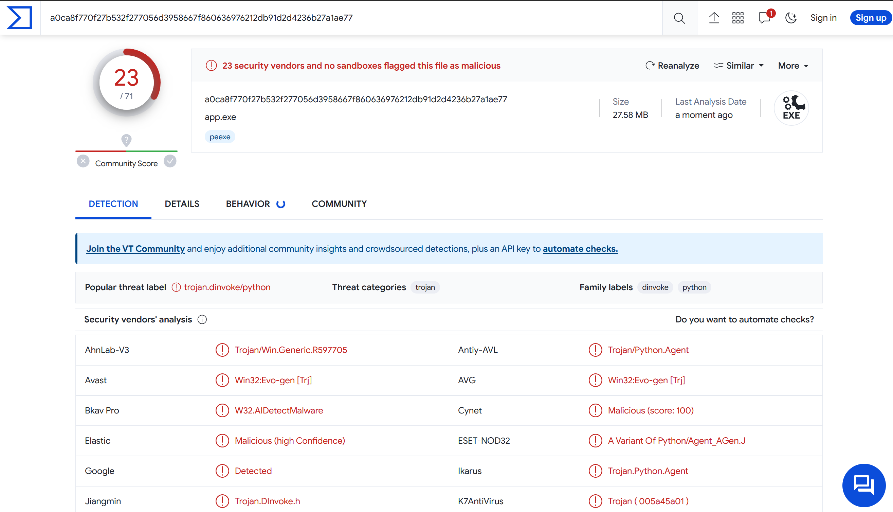
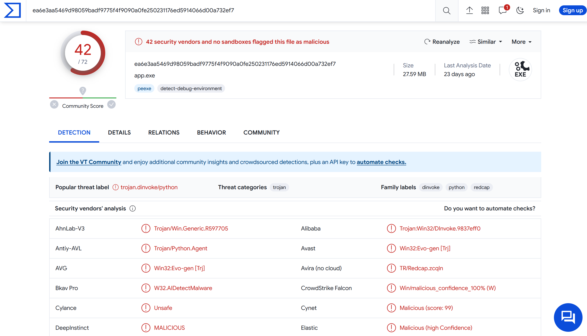

Python 打包成Windows的exe檔遇到被當成病毒的問題
StackOverflow都是說自己build PyInstaller的bootloader可以解決，因此參考: Building the Bootloader — PyInstaller 6.3.0 documentation
Build PyInstaller bootloader
1. 準備build環境 (GCC...)
試了自己build MinGW，遇到zlib static找不到的問題。
發現這包(WinLibs - GCC+MinGW-w64 compiler for Windows)可以直接使用，方便很多。
(另外也許可以用MSYS2，目前還沒試過)
2. Build from PyInstaller source code
cd pyinstaller\bootloader 進入bootloader目錄
3. Start Build
4. Install
回到pyinstaller目錄，然後執行
失敗的話換
然後就可以執行pyinstaller指令了
測試結果
VirusTotal
用VirusTotal服務測試
原本預設(pip install)的Pyinstaller:

用另一套Nuitka (先轉成C++，功能強大)，但是也會被誤判。 
Custom build PyInstaller的bootloader看起來就好很多了，實際上還需要更多驗證。

白名單處理
有人佛心整理了各家防毒軟體的誤判回報區
Blog說明 How to stop your Python programs being seen as malware | by Mark Hank | Medium